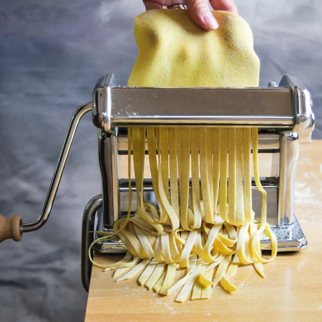

Homemade Pasta Recipe

Homemade Pasta Recipe Ingredients
You only need 4 ingredients to make delicious fresh pasta at home, and
there's a good chance you have all of them on hand already
Ingredients
- All-purpose flour
- Eggs
- Olive oil
- Salt
Steps
- First, make a nest with the flour on a clean work surface
- Next, use your hands to gently mix in the flour
-
Then, knead! At the beginning, the dough should feel pretty dry, but
stick with it!
-
When the dough comes together, shape it into a ball and wrap it in
plastic wrap
- After the dough rests, slice it into 4 pieces
- Roll the dough out to your desired thickness
- Repeat these steps with the remaining dough pieces
- Finally, cut and cook the pasta.